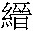
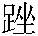

白下程生性磊落，不爲畛畦。一日自外歸，緩其束帶，覺帶端沉沉，若有物墮。 「端」：鑄本、二十四卷本、異史本無。「墮」：二十四卷本作「墜」。視之，無所見；宛轉間有女子從衣後出：掠髮微笑，麗絶。 「絶」：鑄本作「甚」。程疑其鬼，女曰：「妾非鬼，狐也。」程曰：「倘得佳人，鬼且不懼，〔但評〕不得佳人，牀頭真夜叉，鬼且不如矣，况又不止於醜乎！而况於狐。」遂與狎。二年，生一女，小字青梅。每謂程：「勿娶，我且爲君生男。」程信之， 鑄本「男」作「子」，無「信之」二字。遂不娶。戚友共誚姗 姗：〔何註〕音山。之，程志奪，聘湖東王氏。狐聞之，怒，就女乳之，委於程曰 「戚」：鑄本作「親」。二十四卷本「王氏」作「王氏女」，「就女乳之，委於程」作「委女於程」。：「此汝家賠錢貨， 賠錢貨：〔吕註〕西厢記：「我雖是賠錢貨，亦不到兩當一弄成合。」生之殺之，俱由爾。 「生之殺之俱由爾」：二十四卷本作「生殺俱由汝」。「爾」：黄本作「汝」。我何故代人作乳媪乎！」出門逕去。青梅長而慧，貌韶秀，酷肖其母。既而程病卒，王再醮去，青梅寄食於堂叔。叔蕩無行，欲鬻以自肥。適有王進士者，方候銓於家，聞其慧，購以重金，使從女阿喜服役。 「阿」：黄本作「巧」。
喜年十四，容華絶代，見梅忻悦，與同寢處。梅亦善候伺， 青本、黄本無「伺」字。能以目聽，以眉語， 目聽眉語：〔何註〕周禮·秋官：「小司寇之職，以五聲聽獄訟，求民情，一曰辭聽，二曰色聽，三曰氣聽，四曰耳聽，五曰目聽。」又龍輔女紅餘志：「寵姐每嬌眼一轉，憲即知其意。宫中謂之眼語。又能作眉言。」憲，寧王也。〔吕註〕列子：「有亢倉子者，得老聃之道，能以耳視而目聽。魯侯問之，對曰：『傳者之妄也。我能視聽不用耳目，而不能易耳目之用。』」○李白上元夫人詩：「眉語兩目笑，忽然隨風飄。」〔馮評〕建昌道黄觀察應宸極喜此六字，謂他篇無，予謂從楚辭「與余目成」化出。○隴蜀餘聞：「貴州有孝廉黄之驂，耳不能聽，以目聽。」〔但評〕「以目聽，以眉語」寫「善候」二字，神妙直到秋毫巔。覺靈心慧眼等字，俱成糟粕。由是一家俱憐愛之。邑有張生，字介受，家窶貧， 「受」：二十四卷本作「壽」。「窶」：鑄本、青本、黄本作「屢」。無恒産，税居王第；性純孝，制行不苟，又篤於學。〔但評〕有此三者，天必佑之。此三句作總提。青梅偶至其家，見生據石啖糠粥；入室與生母絮語，見案上具豚蹄 豚蹄：〔吕註〕史記·滑稽列傳：「有穰田者，操一豚蹄、酒一盂而祝。」焉。時翁卧病，生入，抱父而私， 抱父而私：〔吕註〕左傳·襄十五年：「師慧過宋朝，將私焉。」註：「私，謂小便。」便液污衣。翁覺之而自恨，生掩其跡，急出自濯，恐翁知。梅以此大異之。〔何評〕慧眼。〔但評〕取人以德，獨具隻眼，可以相天下士矣。歸述所見，謂女曰：「吾家客非常人也。 「吾家客」句：〔吕註〕後漢書皋伯通謂梁鴻語。
娘子不欲得良匹則已，欲得良匹，張生其人也。」〔馮評〕從根本處觀人，真好眼力。女恐父厭其貧，梅曰：「不然，是在娘子，〔馮評〕「是在」句有力，所謂「匹夫不可奪志」。如以爲可，妾潛告，使求伐焉。夫人必召商之，但應之曰『諾』也則諧矣。」〔但評〕意婉而達，言曲而當，此權而不詭於正者。〔何評〕忠謀。女恐終貧，爲天下笑， 「爲天下笑」：二十四卷本作「爲人所笑」。梅曰：「妾自謂能相天下士，必無謬誤。」明日，往告張媪。媪大驚，謂其言不祥，梅曰：「小姐聞公子而賢之也，妾故窺其意以爲言。冰人 冰人：〔吕註〕見胡氏「作冰」註。往，我兩人袒 袒：〔吕註〕見李伯言「左袒」註。焉，計合允遂； 異史本「故」作「欲」，「冰」作「水」。「合」：黄本作「必」。縱其否也，於公子何辱乎？」〔馮評〕女子直快，類英雄舉動，迂儒必議之。〔何評〕善言。
媪曰：「諾。」乃託侯氏賣花者往。夫人聞之而笑，以告王，王亦大笑，〔馮評〕兩「笑」字，自視爲天上人物。唤女至，述侯氏意。女未及答，青梅亟贊其賢，决其必貴。夫人又問曰：「此汝百年事。如能啜糠覈 糠覈：〔吕註〕史記·陳丞相世家：「人或謂陳平曰：『貧何食，而肥若是？』其嫂嫉平不視家生産，曰：『亦食糠覈耳。』」註：「覈讀紇。晉灼曰：京師人謂粗屑爲紇頭。」○按：覈又與麩同，麥糠中不破者也。見玉篇。也，即爲汝允之。」女俯首久之，顧壁而答曰 「即」：黄本作「則」。「壁」：鑄本作「辭」。：〔馮評〕「顧壁」二字傳神。「貧富命也。倘命之厚，則貧無幾時，而不貧者無窮期矣。或命之薄，彼錦綉王孫，其無立錐 立錐：〔何註〕錐音隹，鋭器也。香巖曰：「去年貧無立錐之地，今年錐也無。」〔吕註〕前漢書·董仲舒傳：「富者田連阡陌，貧者無立錐之地。」者豈少哉？是在父母。」〔但評〕主意雖得之於人，而言之委宛真切，見解不惑，所以有厚福而卒歸於生。○見道語，而抑揚吞吐，極盡其妙。「是在父母」句，斷而不斷，更圓。〔馮評〕千古慧業人惟慧眼人能識之，往往如此。初，王之商女也，將以博笑，及聞女言，心不樂曰：「汝欲適張氏耶？」女不答；再問，再不答。怒曰：「賤骨了不長進！ 了不長進：〔吕註〕世説：「支道林住東安寺中，王長史異其才藻，往與語，不大當對。徐徐謂曰：『身與别多年，君言了不長進。』王大慚而退。」 「了不」：鑄本、二十四卷本、異史本作「子不」。「再」：二十四卷本作「復」。欲携筐作乞人婦，寧不羞死！」〔但評〕老誖子無見識，不令女作孝子婦，真可惜死。女漲紅氣結，含涕引去，媒亦遂奔。青梅見不諧，欲自謀。〔馮評〕相賞在風塵外。〔何評〕定識。過數日，夜詣生。生方讀，驚問所來，詞涉吞吐，生正色却之。 二十四卷本「見」下有「事」字。「謀」：青本、黄本作「媒」。「却」：二十四卷本、黄本作「拒」。
梅泣曰：「妾良家子，非淫奔者；徒以君賢，故願自託。」〔但評〕作曹丘生不成，無妨作毛遂耳。○不謂昏夜兒女相會，乃有此正大光明語。須看其極難措詞處，偏能曲曲寫出。文生情耶，情生文耶？○觀人於微，而取德於孝。聖明之世，以德進，以孝舉，以言揚者，不外乎此。求忠良且非其人不可，况匹偶乎！女子能具此隻眼，忘分薦之；薦之不内，乃不避嫌疑以託之。有經有權，非以目聽，以眉語者，何能如是。生曰：「卿愛我，謂我賢也。昏夜之行，自好者不爲，而謂賢者爲之乎？〔但評〕剛直而有理，微婉而多風。○雖是愛賢，然夜往自託，青梅則可，他人則不可。青梅之事，權也。惟青梅所存之心，與青梅所處之勢，與青梅所託之人，而後可以行權；不然，則害於義矣。夫始亂之而終成之，君子猶曰不可；况不能成，彼此何以自處？」〔但評〕更進一層，所謂一摑一掌血。〔馮評〕青梅之言婉而正，張生之言正亦婉，光明磊落，青天白日。梅曰：「萬一能成，肯賜援拾否？」生曰：「得人如卿，又何求？但有不可如何者三，故不敢輕諾 輕諾：〔何註〕老子：「輕諾必寡信，多易必多難。」耳。」〔何評〕通盤打算甚是。曰：「若何？」曰：「卿不能自主， 「卿不」：鑄本作「不」。則不可如何；即能自主，我父母不樂，則不可如何；即樂之，而卿之身直必重，我貧不能措，則尤不可如何。 「尤」：二十四卷本作「又」。卿速退，瓜李之嫌 瓜李之嫌：〔何註〕謂嫌疑也。古詩：「瓜田不納履，李下不整冠。」可畏也！」〔馮評〕是張乖崖、黄石齋一輩人物。〔但評〕以三「不可如何」而不敢輕諾，權衡斟酌，瓜李嫌疑，不苟且目前，不自欺，不欺人，天地鬼神，共聞此語。梅臨去又囑曰：「君倘有意，乞共圖之。」生諾。 「君倘」：異史本、鑄本作「倘君」。黄本「意」作「志」，「生」下有「曰」字。梅歸，女詰所往，遂跪而自投。女怒其淫奔，將施扑責。梅泣白無他，因而實告。 「白」：鑄本、黄本、異史本、二十四卷本作「曰」。「因而」：鑄本作「因以」。女嘆曰：「不苟合，禮也；必告父母，孝也；不輕然諾，信也：有此三德，天必祐之，其無患貧也已。」〔但評〕於女口中贊其三德，而决其不貧，比前又深一層。既而曰：「子將若何？」曰：「嫁之。」
女笑曰：「癡婢能自主耶？」 「耶」：鑄本作「乎」。曰：「不濟，則以死繼之！」〔馮評〕成不成，命也，决於成，志也。繼之以死，則志足以抗命也。○所謂「匹夫不可奪志，」女中之荀息也。女曰：「我必如所願。」〔但評〕女之信張生甚篤，女之待青梅甚厚。梅稽首而拜之。〔但評〕小作頓筆。又數日，謂女曰：「曩而言之戲乎，抑果欲慈悲也？果爾，則尚有微情， 「而拜」：二十四卷本作「拜」。鑄本「也」作「耶」，「爾」下無「則」字。並祈垂憐焉。」女問之，答曰：「張生不能致聘，婢子又無力可以自贖，必取盈焉，嫁我猶不嫁也。」女沉吟曰：「是非我之能爲力矣。我曰嫁汝， 鑄本、異史本、二十四卷本無「汝」字。且恐不得當；而曰必無取直焉，是大人所必不允，亦余所不敢言也。」〔但評〕一波未已，一波又興。用意如叠嶂奇峰，下筆如生龍活虎。讀之如行山陰道上，令人應接不暇。又如放舟湘中，帆隨湘轉，望衡九面。青梅聞之，泣數行下， 鑄本無「青」字、「數行」二字。但求憐拯。女思良久，曰：「無已，我私蓄數金，當傾囊相助。」梅拜謝，因潛告張。張母大喜，多方乞貸，共得如干數，藏待好音。〔但評〕筆筆凌空，字字脱化，展卷百回讀，乃嘆左氏遺筆猶在人間。會王授曲沃宰，喜乘間告母曰：「青梅年已長， 「如干」：二十四卷本作「金若干」。「年已」：黄本作「已」。今將莅任，不如遣之。」夫人固以青梅太黠，恐導女不義，每欲嫁之，而恐女不樂也，聞女言甚喜。逾兩日，有傭保婦白張氏意，王笑曰：〔馮評〕四「笑」字，自視過高，其實睡裏夢語。「是衹合耦婢子，前此何妄也！ 二十四卷本「耦」作「配」，「此」作「言」。〔但評〕亦將笑之曰：「是衹許嬪婢子，後此難悔也。」然鬻媵高門，價當倍於曩昔。」女急進曰：「青梅侍我久，賣爲妾，良不忍。」王乃傳語張氏，仍以原金署券， 署券：〔何註〕署值也。以青梅嬪於生。 「語」：異史本、鑄本作「與」。二十四卷本「語」作「於」，「署」作「書」，「生」作「張」。
入門，孝翁姑，曲折承順，尤過於生，而操作更勤，厭糠秕不爲苦。〔馮評〕如此賢夫婦，斷不致以貧賤終。由是家中無不愛重青梅。 「重」：青本、黄本作「敬」。〔但評〕既能孝養，且餐糠粃，豈惟其家愛敬之，天下後世之人，皆當愛之敬之。梅又以刺綉作業，售且速，賈人候門以購，惟恐弗得。 「弗」：二十四卷本作「不」。得貲稍可御窮， 御窮：〔何註〕御，當也。詩·邶風：「以我御窮。」且勸勿以内顧誤讀， 黄本「稍可」作「深可」，並二十四卷本「勸」下有「生」字。經紀皆自任之。因主人之任，往别阿喜。 「阿」：黄本作「巧」。喜見之，泣曰：「子得所矣，我固不如。」〔但評〕聞者皆爲之泣。○女見之而泣，宜也；我不知何故，亦代爲之泣。梅曰：「是何人之賜，而敢忘之？ 二十四卷本無「而」字。然以爲不如婢子，恐促婢子壽。」 「恐」：鑄本作「是」，黄本作「徒」。遂泣相别。王如晉，半載，夫人卒，停柩寺中；又二年，王坐行賕免，罰贖萬計，漸貧不能自給，從者逃散。是時，疫大作，王染疾，亦卒。 「疫」：二十四卷本作「疫癘」。鑄本無「亦」字。
惟一媪從女，未幾，媪又卒， 「又卒」：青本、鑄本、黄本作「亦卒」。女伶仃益苦。有鄰嫗勸之嫁， 「嫗」：鑄本作「媪」。女曰：「能爲我葬雙親者，從之。」〔何評〕言亦是。嫗憐之，贈以斗米而去。 「嫗」：手稿本、鑄本、異史本、黄本、青本作「媪」，今據二十四卷本改。（下同）「以斗」：青本、黄本作「一斗」。半月復來，曰：「我爲娘子極力，事難合也：貧者不能爲而葬， 「也」：二十四卷本作「矣」。鑄本無「而」字。富者又嫌子爲陵夷嗣，奈何！尚有一策，但恐不能從也。」女曰：「若何？」曰：「此間有李郎，欲覓側室，倘見姿容，即遣厚葬，必當不惜。」 「必當不惜」：鑄本無。
女大哭曰：「我搢紳裔，而爲人妾耶！」〔但評〕爲

紳裔一哭。若紳，則無足哭也，是固紳而智出婢子下者。嫗無言，遂去。日僅一餐，延息待價。 「遂」：二十四卷本作「而」。「價」：鑄本、二十四卷本、異史本作「賈」。「價」，古作「賈」。居半年，益不可支。一日，嫗至，女泣告曰：「困頓如此，每欲自盡；猶戀戀而苟活者，徒以有兩柩在。己將轉溝壑，誰收親骨者？故思不如依汝所言也。」〔但評〕女亦誠孝矣，固宜得配孝子。〔何評〕可憐極矣。嫗於是導李來， 鑄本「所言」作「所」，「於是」作「即」。微窺女，大悦，即出金營葬。雙槥 槥：〔吕註〕前漢書·高帝紀：「令從事死者爲槥歸其家。」註：「槥，小棺也。」具舉已，乃載女去。入參冢室， 冢室：〔何註〕大婦也。冢室故悍妬，李初未敢言妾，但託買婢。及見女，暴怒，杖逐而出， 「出」：青本、黄本作「去」。不聽入門。〔但評〕是杖也，疑有神助。○此冢室悍妬，爲是時必不可少之人。〔馮評〕保全。女披髮零涕，進退無所。有老尼過，邀與同居，女喜， 二十四卷本「有」上有「適」字。鑄本無「女」字。從之。至庵中，拜求祝髮， 祝髮：〔何註〕祝，斷也。謂削髮也。穀梁傳·哀公十三年：「祝髮文身。」尼不可，曰：「我視娘子，非久卧風塵者。〔但評〕非尼果能相人，特爲上相張生作映筆，即以先透下文耳。庵中陶器 陶器：〔何註〕瓦器也。脱粟，粗可自支， 「視」：二十四卷本作「觀」。「支」：二十四卷本作「給」。姑寄此以待之。時至，子自去。」居無何，市中無賴窺女美，輒打門游語爲戲， 「輒」：鑄本作「每」。尼不能制止。
女號泣欲自死。 鑄本無「制」字，「死」作「盡」。黄本「制」作「禁」。尼往求吏部某公，揭 揭：〔何註〕音訐，高舉也。示嚴禁，惡少始稍斂跡。後有夜穴寺壁者，尼警呼始去。 「警」：諸參校本作「驚」。因復告吏部，捉得首惡者， 二十四卷本無「者」字。送郡笞責，始漸安。又年餘，有貴公子過庵， 鑄本無「庵」字。見女，驚絶，强尼通殷勤，又以厚賂啖尼，尼婉語之曰：「渠簪纓胄， 簪纓胄：〔何註〕猶言世家後也。簪纓，貴者冠飾。李白詩：「京國會簪纓。」胄，音宙，系也，嗣也。左傳·襄十四年：「謂我諸戎是四岳之裔胄也。」不甘媵御。公子且歸，遲遲當有以報命。」既去，女欲乳藥求死， 乳藥求死：〔何註〕王允語也。〔吕註〕後漢書·王允傳：「張讓以事中允，明年遂傳下獄。會赦還。旬日間，復以它罪被捕。諸從事好氣决者共流涕，奉藥而進之。允厲聲曰：『吾爲人臣，獲罪於君，當伏大辟，以謝天下；豈有乳藥求死乎！』投杯而起。」 鑄本無「求」字。夜夢父來，疾首曰：「我不從汝志，致汝至此， 「至」：黄本作「如」。悔之已晚！〔但評〕早知有今日矣。但緩須臾勿死，夙願尚可復酬。」女異之。天明，盥已，尼望之而驚曰：「睹子面，濁氣盡消，横逆不足憂也。
福且至，勿忘老身矣。」語未已，聞叩户聲。 鑄本無「矣」，「已」作「既」。二十四卷本「户」作「門」。女失色，意必貴家奴。尼啟扉，果然。奴驟問所謀，尼甘語承迎，但請緩以三日。奴述主言：「事若無成，俾尼自復命。」 「意必……復命」三十九字：手稿本原作「曰此前世冤家勾牒至矣。尼啟扉，果公子家奴。驟問所謀，尼紿之曰：消息大好。勸語之，詞意生硬，賴我磨爛三寸舌，始説得石姑姑略一眨眼。告公子勿急，三兩日管有佳夢作也。奴曰：公子言事若無事，教汝自復命」，「語之」右下有「述女志之堅，已説之苦」均塗改。鑄本、異史本、二十四卷本「然」下無「奴」字，「甘」作「笑」。尼唯唯敬應，謝令去。女大悲，又欲自盡，〔但評〕真是千磨百折，不到山窮水盡時，不肯輕作轉筆。尼止之。女慮三日復來，無詞可應，尼曰：「有老身在，斬殺自當之。」〔馮評〕驚濤怒浪，將落又起。次日，方晡，暴雨翻盆， 翻盆：〔吕註〕杜甫詩：「白帝城下雨翻盆。」註：「言雨勢之暴也。」忽聞數人撾户 撾户：〔何註〕敲門也。大嘩。〔馮評〕險極之文，快極之文。女意變作，驚怯不知所爲。尼冒雨啟關，見有肩輿停駐；女奴數輩，捧一麗人出。
僕從煊赫，冠蓋甚都，驚問之，云：「是司李内眷， 「肩」：青本、黄本作「香」。「李」：青本作「理」。暫避風雨。」〔馮評〕烈風迅雷，忽又柳媚花香。導入殿中，移榻肅坐。家人婦羣奔禪房，各尋休憩。入室見女，艷之，走告夫人。無何雨息，夫人起，請窺禪舍，尼引入。睹女，駭絶， 鑄本「駭絶」作「艷絶」，並異史本、二十四卷本「舍」作「室」。圖本無「入」字。凝眸不瞬；女亦顧盼良久。夫人非他，蓋青梅也。〔馮評〕「青梅也」三字，天上落下。〔但評〕層層疑陣，驚鬼驚神，至此列開旗門，將軍突現，令人目炫神摇，筆亦跳脱欲飛。○盡可轉落矣，又不肯即轉，故作驚人之筆，然後輕輕轉出。乃已轉矣，又先從尼目中寫一層，再從僕口中寫一層，然後以家人婦入室見女，走告夫人，又雨息而夫人始起，尼引入而夫人駭然凝眸，女亦顧盼良久。至此，方特特落出「夫人非他」二語，真同飛來又恐其復將飛去。各失聲哭，因道行踪。蓋張翁病故，〔馮評〕張翁死不多叙，衹此已明。生起復 起復：〔吕註〕按：起復二字，今人皆以爲禫後即吉。趙昇朝野類要云：「已解官持服，而朝廷特再擢用者，名起復。起復即奪情也。以禫後即吉爲起復者誤。」後連捷，授司理。生先奉母之任，後移諸眷口。 青本無「先」字。「諸眷」：黄本作「眷」。女嘆曰：「今日相看，何啻霄壤！」梅笑曰：「幸娘子挫 挫：〔何註〕音 
乃取珠冠錦衣，催女易妝。
女俯首徘徊，尼從中贊勸之。 鑄本、異史本無「之」字。「勸」：二十四卷本作「助」。女慮同居其名不順，梅曰：「昔日自有定分，婢子敢忘大德？〔馮評〕女中大賢，方能出此語。試思張郎豈負義者？」强妝之，别尼而去。抵任，母子皆喜。女拜曰：「今無顔見母！」母笑慰之，〔馮評〕這一「笑」字，抵上王進士幾個「笑」字，味何藴蓄也！因謀涓吉合卺， 「涓」：但本、圖本作「擇」。女曰：「庵中但有一絲生路，亦不肯從夫人至此。〔何評〕實言。倘念舊好，得受一廬，可容蒲團足矣。」梅笑而不言。〔馮評〕此「笑」字亦妙。及期，抱艷妝來，女左右不知所可，俄聞鼓樂大作，女亦無以自主。梅率婢媪强衣之，挽扶而出。 「亦」：九二三九號青本、但本、圖本作「益」。「挽扶」：黄本作「扶挽」。見生朝服而拜，遂不覺盈盈而亦拜也。 二十四卷本「遂」上有「女」字。「亦」：鑄本、異史本、二十四卷本作「自」。〔但評〕女始願不及此，自庵中聞梅之言，知梅意中有此；抵任聞母之言，知母意中有此；然終不敢望此，不遽信此也，擇吉時猶可置詞；至及期抱妝來，則喜出望外，又在意中。聞鼓樂之聲，見玉郎之拜，身不自主，魂爲之摇。得此傳神之筆，乃一一活現紙上。〔馮評〕文章作態，至此可稱妖艷。梅曳入洞房，曰：「虚此位以待君久矣。」〔但評〕庵中催易妝，則俯首徘徊；及期抱艷妝來，則左右不知所可。聞鼓樂大作，則益無以自主；見生朝服而拜，則不覺盈盈而亦拜：深思委婉，妙筆空清。「虚此位以待君」句，真是點睛飛去。讀者於其用意用筆求之，可得最上乘法。
又顧生曰：「今夜得報恩，可好爲之。」返身欲去，女捉其裾，梅笑云 「笑云」：鑄本、異史本、二十四卷本作「笑曰」。：「勿留我，此不能相代也。」解指脱去。青梅事女謹，莫敢當夕。 莫敢當夕：〔何註〕禮·内則：「妻不在，妾御莫敢當夕。」註：「當夕，當妻之夕也。」〔馮評〕賢哉女也，我亦敬之。而女終慚沮不自安。 「沮」：二十四卷本作「阻」。於是母命相呼以夫人，然梅終執婢妾禮， 鑄本無「然」字。「妾」：黄本作「子」。罔敢懈。三年，張行取入都，過尼庵， 鑄本無「尼」字。以五百金爲尼壽。〔馮評〕不漏一筆。尼不受，固强之，乃受二百金，起大士祠，建王夫人碑。後張仕至侍郎； 鑄本無「固」字。「仕」：黄本作「任」。程夫人舉二子一女，王夫人四子一女，張上書陳情，俱封夫人。
異史氏曰：「天生佳麗，固將以報名賢；而世俗之王公，乃留以贈紈袴。 紈袴：〔何註〕袴，古作絝。紈，羅綺之屬，膏粱子弟脛衣也。〔吕註〕漢書·叙傳：「班伯與王許子弟爲羣，在於綺襦紈袴之間，非其好也。」註：「綺襦紈袴，富貴者之服也。」此造物所必争也。而離離奇奇，致作合者無限經營， 九二三九號青本、但本、圖本「者」下有「費」字。化工亦良苦矣。〔馮評〕此即作者自評文字經營獨苦處。獨是青夫人能識英雄於塵埃，誓嫁之志，期以必死；曾儼然而冠裳也者，顧棄德行而求膏粱，何智出婢子下哉！」〔何評〕難言。
王漁洋云：「天下得一知己，可以不恨， 「天下」句：〔吕註〕世説：「虞仲翔放棄南方，自恨疏節，骨體不媚，犯上獲罪。當長没海隅，生無可與語，死以青蠅爲弔客，使天下一人知己者，足以不恨。」△按：事見世説新語補。况在閨闥耶！青梅，張之知己也，乃王女者又能知青梅。事妙文妙，可以傳矣。」 手稿本、鑄本、黄本、異史本、二十四卷本無此評。
〔但評〕此篇筆筆變幻，語語奥折，字字超脱。熟讀之，可去鈍根，可啓靈性。至其議論正大，動必以禮，行必以義，尤足感人心情，蕩滌邪穢，是爲有關世教之言。
〔何評〕凡德施於貧賤，則易爲力；施於富貴，則難爲功。青夫人能識張於塵埃之中，其智殆不可及也，孰謂福非自己求乎？
〔方評〕介受污衣掩跡，阿喜賣身葬親，皆純孝也。然總須青梅以合之。青梅何閒哉！識張生于未遇，智也；自媒，權也；誓死期嫁，信也；刺綉代養以從夫，禮也；一遇王即涓吉以成之，屈己以事之，勇而養也。復何閒哉！
〔校記〕（底本：手稿本 參校本：異史本、二十四卷本、鑄本、青本、黄本）
本章完!